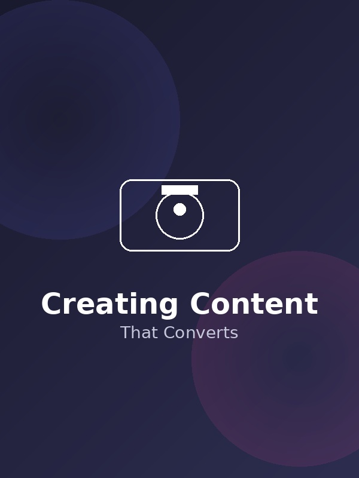

Research
I begin by understanding audience behavior, brand voice, product context, and the gaps that need to be filled.
Loading experience...
My work sits at the intersection of strategy, storytelling, and disciplined execution.

I started in content and social media because I was fascinated by how a strong point of view could transform attention into trust. Over time, the work evolved from posting regularly into shaping entire digital identities for brands that wanted to feel current without losing their essence.
My approach is practical and intentional. I focus on understanding the audience, the brand's positioning, and the kind of story that will genuinely move people to engage, remember, and return.
I blend reactive social fluency with a steady editorial point of view.
Whether it is a fashion label, a cultural event, or a growing business, I tailor the work to the brand rather than forcing a template.
I begin by understanding audience behavior, brand voice, product context, and the gaps that need to be filled.
Every idea is placed into a practical content plan, with timing, narrative structure, and goals in mind.
I produce the content with care, making sure it feels polished, on-brand, and suited to each platform.
I review what performs, refine the approach, and keep the system improving over time.